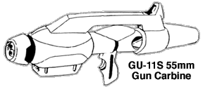
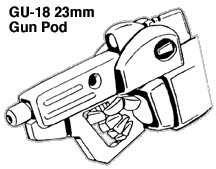
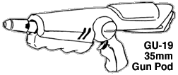
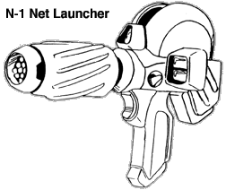
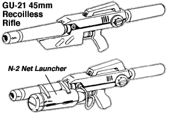

Most of the weapons in this section were based on weapons used in Robotech: The Untold Story (A.K.A. Megazone 23 Part 1). Special thanks to PETER WALKER for pictures and background info.
NOTE: These weapons can easily be integrated into your Southern Cross or Invid Invasion campaigns even if you are not playing a full Third Invid War campaign. They should be generally available on Earth any time after the late 2020s / early 2030s, shortly before the arrival of the Robotech Masters. Stats for the Southern Cross Garland Cyclones are available by clicking HERE.
CONTENTS:

This weapon is a variant of the original GU-11 Gun Pod
used by the old VF-1 Veritechs of the Robotech Defense Force (RDF). Smaller,
with a shorter barrel and smaller ammo supply, the weapon was designed to be
used by the smaller-scale battloids and garlands of the Southern Cross. The
weapon can be used by Cyclone riders, but looks a little out of scale for
them; more like a three-barrel bazooka than a carbine. Although popular because of
it's strong punch, the weapon is becoming increasingly rare due to lack of
55mm ammo.

A small handheld gun pod designed to be used by the series
5 Garlands of the Southern Cross. This handheld weapon is a fairly popular
replacement for the EP-40 Pulse Beam Gun because of its non-reliance on
protoculture energy supplies. The gun itself is difficult to find due to its
limited production, but ammo can frequently be found in the ruins of old SC
bases and equipment caches.

A non-protoculture, conventional ammunition version of the
EP-37 Beam Cannon for the Cyclone mecha. This weapon is EXTREMELY popular
with resistance fighters, as it uses the same ammunition that the GU-XX Gun
Pod (used on Alpha and Beta fighters) uses, allowing the Veritechs and
Cyclones to share ammo when necessary. The weapon can be used by humans
without Cyclones, but is heavy and akward, and imposes a penalty of -3 to
strike.
 A unique weapon developed for the Global Military Police (GMP) during the years before the Second Robotech War, this weapon fires a woven cable net about 10 feet in diameter. The net is very strong, and breaking it requires the victim to do at least 20 MDC points of damage (total) to the net; each strand is only 1 MDC each, but many strands must be broken before the victim can be freed. It will take 4D6 melees for a person to untangle himself or herself from the net.
The N-1 Net Gun was originally designed to help GMP agents capture fugitives
and suspects without a great risk of harming them (or their hostages).
Due to this fact, this weapon is seldom used by terran resistance, as they
seldom desire to actually capture an Invid. Instead, it is more commonly used
by Frags and other Invid sympathizers to
capture resistance fighters and slaves for the Invid.
GU-21 45mm RECOILLESS RIFLE (with optional N-2 NET LAUNCHER)

A rather
powerful and dangerous weapon developed for the Garland cyclones shortly before
the arrival of the Robotech Masters. This weapon is fairly rare and well
sought after for it's destructive potential. The GU-21 fires 45mm fin-
stabilized grenades, and can use several different types of grenades. The
weapon uses a unique ammo clip that can carry up to 3 different types of ammo,
and can switch between those ammo types by flipping a switch on the back of
the rifle. The GU-21 ca use High Explosive Anti-Tank (HEAT), Fragmentation
(FRAG), Smoke or Gas grenades. The GU-21 can also be equipped with an
external N-2 net launcher, which launches a net similar to the N-1 net gun.
GU-21 Recoilless Rifle:
N-2 Net Launcher:


 |
http://www.mcs.net/~deitrich/index.html deitrich@mcs.net |
Last Updated: |